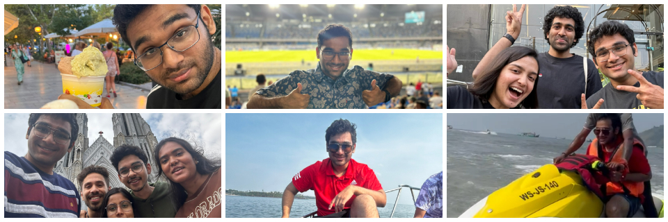

Intro

I am a full stack Software Developer in Airbus SE working on the
development of a web application called Skywise Health Monitoring,
it specializes in monitoring the health of all the aircrafts under
the Airbus Aircraft family. Refer Work for
more details.
I graduated from Mahindra École Centrale, Hyderabad in 2022 with a
B.Tech in Computer Science Engineering. During my time at college,
I have worked on numerous projects and internships, Most of my
projects can be found on the pinned repositories on my
Github Profile.
My most notable academic work in college would be the work
I had done on the
"Investigations on convergence behaviour of Physics Informed
Neural Networks across spectral ranges and derivative orders"
which was published in the IEEE Xplore Digital Library.
Work

My work at Airbus SE involves the development of a web application
called Skywise Health Monitoring. This application requires the
knowledge and use of AWS cloud services, ReactJS(Typescript),
Java, Python, gremlin, shell scripting, git and many other
technologies(and their respective testing technologies) almost all
the time
As I was still in college before Airbus, I worked in form of
internships for a few companies. Most major of them being
Telstra, where I worked on
the development of a web application that was a middleware between
the client and the server. The application was developed using
ReactJS(Typescript), NodeJS. I mostly did testing for existing
features, and some serverless scripting as they were moving from
Atlassian Bamboo to an independent Jenkins + AWS. This is also
where I got a real taste of Agile form of working.
About

When it comes to my personal life, I keep looking for new things
to do as it gets really boring otherwise. But for most of my free
time, I go to the gym, rice(Customize) my arch linux distribution,
read books(Currently, Lord of the Flies) or explore new places in
the city
Contact